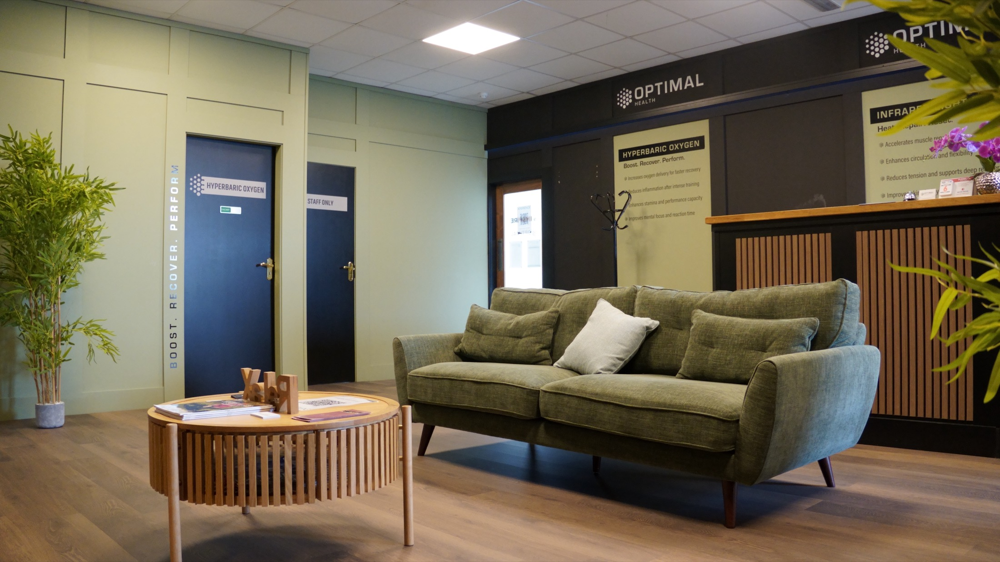
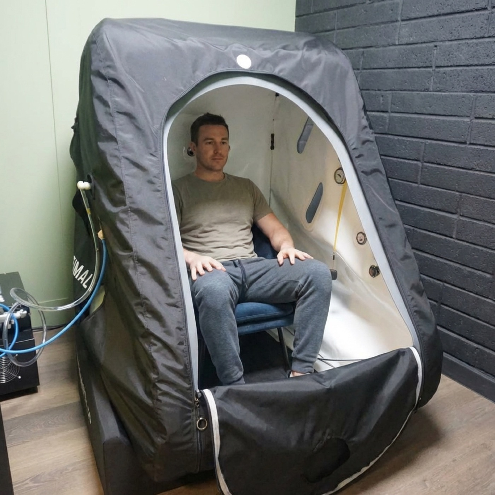
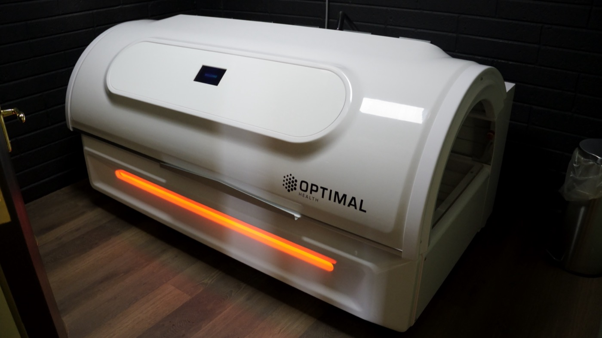
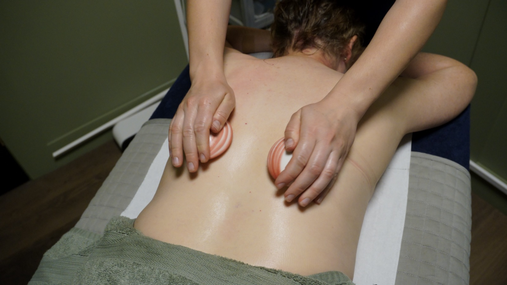
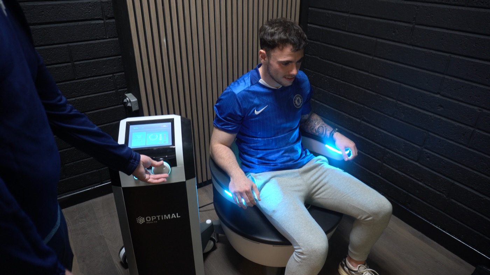

What we do
Each supports your body differently. None of them asks much of you. Between twelve and fifty minutes, guided from start to finish.
Choose one
Most people start with whichever fits the thing they came in about, then try the others. Tell us what you are hoping to get out of it and we will be straight with you.

Higher oxygen levels to support recovery, clarity and steady energy.

Deep, gentle warmth that helps muscles release and joints loosen.

Massage, reflexology and lymphatic drainage, from clinical therapists.

Supports cellular energy, circulation and pelvic floor engagement.
Common questions
No. Most of the people who come in are not. The clinic was built for people training hard, living busy, or simply wanting to move and sleep better.
Whatever you arrived in. You stay fully clothed for HIFEM and for hyperbaric oxygen. For infrared, comfortable clothing is easiest.
Between twelve and fifty minutes depending on the therapy. There is nothing to recover from afterwards, so you can come on a lunch break.
No. Start with a single session. Blocks of ten work out cheaper if you decide to keep going.
Please do. Call 083 867 2844 or send a message and we will tell you honestly whether we think it suits what you are after.
Getting started
No obligation, and no pressure to book a block on the day.